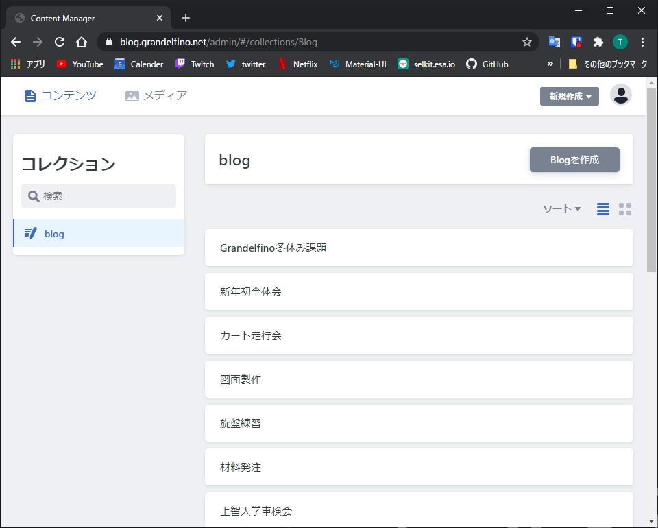
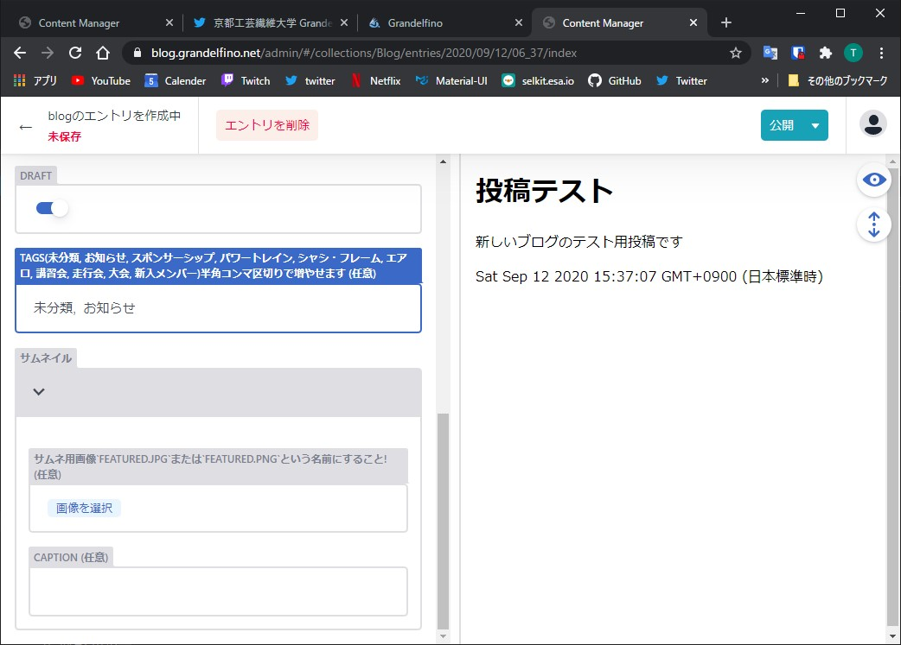

ブログ記事の管理
管理ページへのログイン方法
ブログのURL末尾に/adminを加える
https://blog.grandelfino.net/admin
- Netlify Identityでログインする からログインを行ってください
IDおよびパスワード
記事の新規作成
- 記事を作成する場合, 右上の Blogを作成 から作成できます 
記事の内容について
ブログのタイトル, 本文, タグ, サムネイル用画像の順に記入します.
また, サムネイル用に使う画像の名前は必ずfeatured.jpgまたはfeatured.pngにしてください.サムネイルに用いた画像は自動的にブログ本文の一番上に表示されるので, 本文中に画像を追加する必要はありません.
- 下書き用に保存したい場合,
Draftにチェックを入れると公開せずに保存されます - タグはコンマ区切りで複数追加することができます.
e.g.,(お知らせ, スポンサーシップ)
記事の公開,非公開,削除について

- 記事を破棄したい場合,左上の
未保存で変更を破棄し,記事一覧に戻ることができます. - 記事を一時的に保存したい場合,
Draftにチェックを入れ右上の公開で下書きを保存できます. - 記事が完成し投稿を行いたい場合は,
Draftのチェックを外し,公開でブログに公開されます. - 記事を削除する場合, 公開済みのエントリを選択し
エントリを削除から完全に削除できます.
投稿した記事を編集したい場合
- エントリ一覧ページから,
ソート -> Publish this page onで投稿の新しい順/古い順にソートすることができます. - ソートには時間がかかる為,編集したい記事のタイトルを覚えている場合は左の検索からタイトルを記入したほうが早いです
- また,一番上の空欄のエントリとPostと書かれたエントリは削除しないでください
- 編集したいエントリを選択し,変更を完了したい場合は新規作成するときと同様に
公開から更新ができます. - 非表示にしたい場合も同様に
Draftにチェックを入れ公開から非公開にすることができます